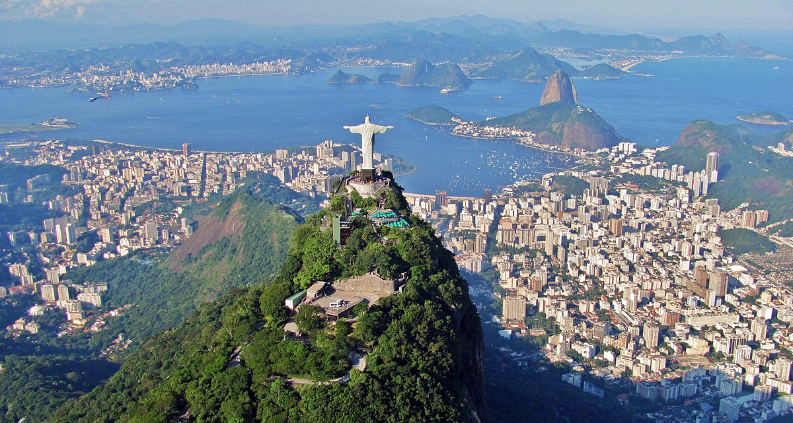

Explore Exciting Destinations
Paris, France

Experience the romance of Paris, known for its iconic landmarks like the Eiffel Tower and Louvre Museum. Explore charming streets, savor exquisite cuisine, and indulge in the city's rich history and culture.
Tokyo, Japan

Discover the vibrant metropolis of Tokyo, where ancient traditions blend with modern technology. Enjoy sushi, visit historic temples, and immerse yourself in the bustling energy of this dynamic city.
Rio de Janeiro, Brazil
Experience the colorful and lively Rio de Janeiro, home to stunning beaches like Copacabana and vibrant carnival celebrations. Enjoy samba music, explore the Sugarloaf Mountain, and soak up the sun.
Nairobi, Kenya

Explore the wildlife and natural beauty of Nairobi, a gateway to African safaris. Visit Nairobi National Park, witness incredible wildlife, and experience the rich culture and history of Kenya.